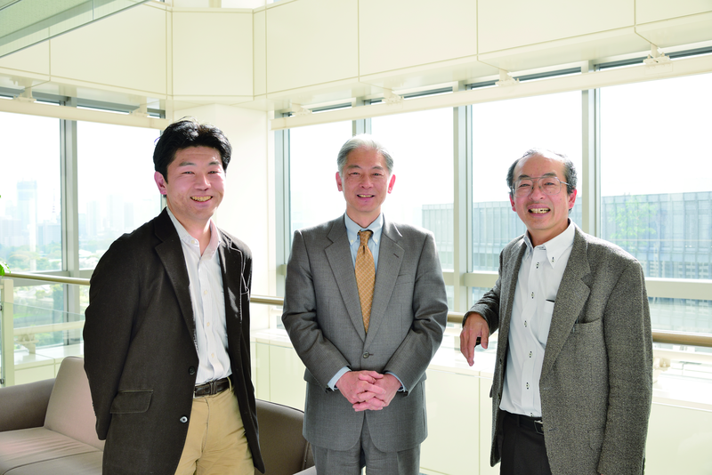

グランドチャレンジ「東ロボ」は
社会に何をもたらすのか
人 間の思考や知能をコンピュータ上で実現することを目指す、人工知能。その技術は、コンピュータの黎明期から現在に至るまで、幾度かの転換期とさまざまなグ ランドチャレンジを経ながら大きく進展してきた。2011 年にスタートした「東ロボ」プロジェクトも、人工知能技術を飛躍させる新たなグランドチャレンジとして注目を集める。その可能性と成果への期待について、 第一線の研究者が語り合う。

稲邑哲也 （左）
国立情報学研究所 情報学プリンシプル研究系 准教授
総合研究大学院大学 複合科学研究科 情報学専攻 准教授
「東ロボ」サブプロジェクトディレクター
武田浩一 （中央）
日本アイ・ビー・エム株式会社 東京基礎研究所 ナレッジ・インフラストラクチャ担当 技術理事
西田豊明 （右）
京都大学大学院 情報学研究科 知能情報学専攻 教授
「知能とは何か」という根源的な問題
稲邑 人工知能研究は新しいことと思われがちですが、実は、その歴史は長いですね。
西田 「Artificial Intelligence（ 人工知能）」という言葉が初めて使われたのは、1956 年のダートマス会議※１です。世界最初のコンピュータ「ENIAC」が開発されたのが1946 年ですから、人工知能の本格研究はコンピュータが発明されてすぐに始まったと言えます。その後、人工知能研究はほぼ10年周期でパラダイムを転換しながら 進展してきました。人間のトータルな知能を超える人工知能はまだ実現されていませんが、データマイニング技術※2、音声・画像認識技術、自然言語処理技 術、情報検索技術など、さまざまな要素技術はすでに社会で活用されています。
稲邑 人間に近づくことを目指しているのは、ヒューマノイドロボットという意味でのロボットも同じですが、人工知能とロボットの関係についてはどうお考えですか。
西田 知能は大脳だけで実現できるという考え方と、知能には本質的に身体性が必要だという考え方がありますが、僕は後者の立場を支持しています。図形的なことや、空間的なことを直観的に理解するには、身体性が不可欠だと思います。
稲邑 私は学生時代からロボット工学を専門としてきて、「東ロボ」では物理の問題を担当しています。この物理の問題が、大脳で考えるだけでは突破できないことの 典型です。ボールを投げる、力を加えすぎると壊れるといった現実世界の事象を扱うには、人間が体で体験して身につけている物理法則や知識が必要だからで す。現時点ではシミュレータにより対応していますが、将来は、ロボットが人間と同じように実世界で活動しながら、そうした体験的な知識を獲得できるように したい。ただ、人間の体の機能を工学的に実現するのは非常にハードルが高いので、大脳機能という意味での人工知能の研究とどう結びつけていくかは今後の大 きな課題です。
西田 人間らしい人工知能やロボットを実現するためには何が必要かという、根源的な問題についても突き詰めて考えていく必要があると思います。人間の場合は、頭 脳だけでなく、心や感情が大きな役割を果たします。すぐれた人工知能やロボットを作るには、こうした要素も取り入れていくことが必要です。
武田 私も参加した「Watson」の開発プロジェクトでは、そのような人間的な要素は切り離して、質問に対する解答を計算する性能だ けを追求しました。最終的に音声認識は使わず、答えを読み上げる音声合成だけを使用していますから、人間らしく聞いて答えるというシステムでもありませ ん。ただ、負けているときに焦って間違えるということもないですが。そういう意味では、Watsonは人間に代わるものではなく、「大量のデータを利用し て質問の解答候補および仮説を生成し、根拠に基づいた評価を行う」ことに特化して、人間の知的活動のサポートを目指したシステムと言えます。
身体性や心の領域にも踏み込む
稲邑 Watson がIBMのグランドチャレンジという位置づけであったように、「東ロボ」はNIIのグランドチャレンジです。その目指すところは東大合格ですが、それが実 現したら本当に知能を獲得したことになるのかというと、まだ第一歩にすぎないのかもしれません。たとえばこういう問題があります。「金属の棒に数箇所バ ターを塗り、そこに豆を付ける。その棒の片方をろうそくで温めたら、どういう順番で豆が落ちるか」という小学校の理科の問題です。「東ロボ」が東大入試を 突破できても、この問題は解けないでしょう。なぜなら記号や公式に変換できないからです。でも人間なら小学生でも、体験的な知識や常識の範囲で解ける。こ うした人間の常識をどう扱うか。今はうまくプログラムすることで乗り越えようとしていますが、長期的には人工知能が自ら獲得できるようにするのが理想的な 形です。つまり、東大から小学校へとステップアップしていかなければならないのです。それは本当に難しいことだけれど、ロボットや人工知能が踏み込むべき 領域であり、その第一歩という意味でも「東ロボ」には大きな意義があると考えています。
武田 IBM では今後5年間に人々の生活を一変させうるイノベーションとして、人間の五感をコンピュータに取り入れていく可能性を検 討し始めています。味覚や嗅覚などの生理学的な情報を、数値的な計算に取り入れるのは難しいことです。しかしそれができたら、より人間に近い思考や知能が 実現できるかもしれません。さらに言えば、身体的な感覚が、人間の常識の形成に関わっていたり、人間の心や感情に影響を与えたりするものならば、これから の情報技術の世界には欠かせない要素となるはずです。
西田 第一段階の目標であるセンター試験は、大量のデータに基づく質問応答性能を徹底的に追求するWatson流のアプローチだけでもある程度解けると思うので すが、二次試験の国語の問題などを解くには、心や感情という要素を取り入れていくことが必要になると思います。二次試験の記述式の解答を生成するには、読 む人をうならせる文章表現力も求められますが、それが実現できればすばらしい成果になるでしょう。「東ロボ」が画期的かつ重要なチャレンジであるのは、気 持ちの理解や表現のレベルまで本格的に迫ろうとしていることにあると思います。
武田 そのようなチャレンジができること自体、この分野の大きな可能性を示していますね。
西田 人工知能の研究者としては、二次試験に合格できるような知能ができたら是非会話してみたいと思っています。とても興味深いものになると思います。人間の 「知」が顕わになるようなチャレンジに対する答えを実践的に探究することによって、人間の知の本質にかなり迫ることができると思います。人間のクリエイ ティビティを高め、社会のさらなる進歩にも寄与できるに違いありません。「東ロボ」のこれからのチャレンジを大変楽しみにしています。
（取材・文＝関亜希子）
※１ ダートマス会議
1956 年に行われた、人工知能に関する研究発表会。正式には「The Dartmouth Summer Research Projecton Artificial Intelligence ( 人工知能に関するダートマスの夏期研究会)」と呼ばれ、ここで初めて「ArtificialIntelligence ( 人工知能)」という言葉が使われた。
※２ データマイニング技術
大量の未整理データから人間の役に立つ情報を見つけだす技術。